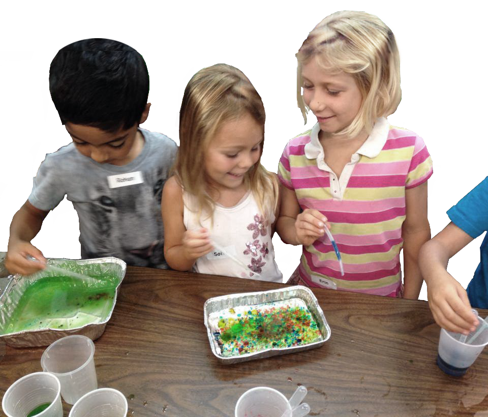
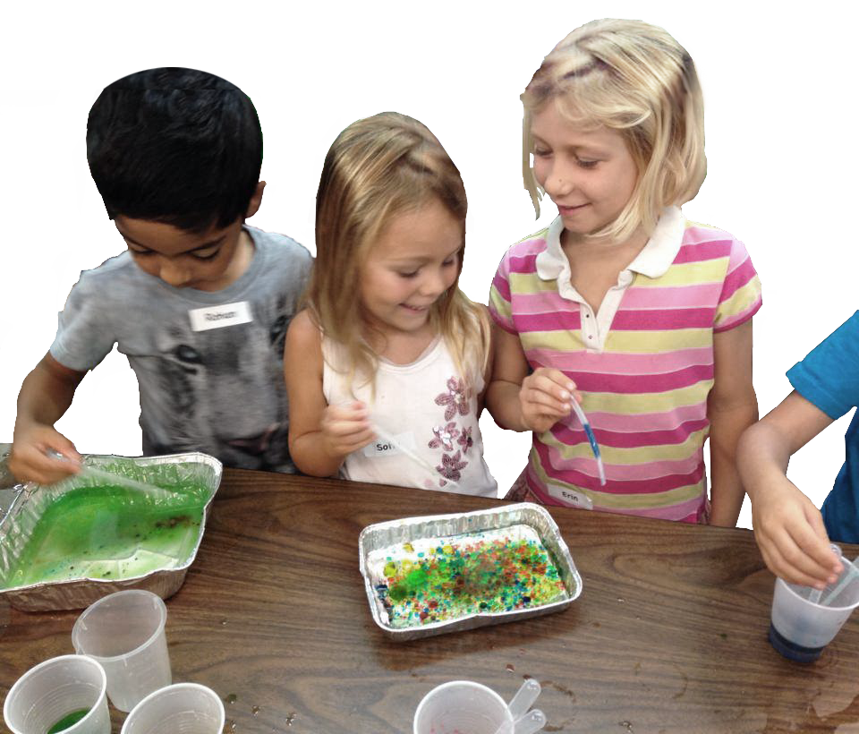

Explorit Science Center
Explorit Science Center
Explorit engages children and adults in hands-on science discovery. We have a family-friendly museum and nature site in Davis. What’s more, we take science programs on the road to schools and community sites in 16 counties. The center offers everyone the chance to “Think it… Try it… Explorit.”
Information about events, job openings, volunteer and giving opportunities, and other happenings at Explorit.
Check out these online science quizzes, games, challenges stumpers and more.
As a teacher prepair yourself for the Explorit Experience. Plan your school or group visit to Explorit.
Bootstrap is open source. It's hosted, developed, and maintained on GitHub.
View the GitHub projectMillions of amazing sites across the web are being built with Bootstrap. Get started on your own with our growing collection of examples or by exploring some of our favorites.
We showcase dozens of inspiring projects built with Bootstrap on the Bootstrap Expo.
Explore the Expo